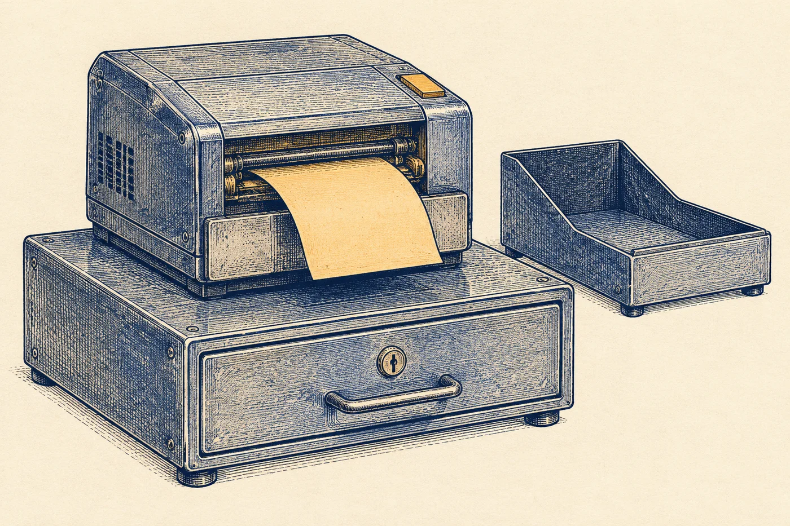

01 / 查库之前
两次超时，究竟差在哪？
这些屏幕里的「应用追踪」和「中转追踪」是本机实验捕获的事件，不是生产服务器日志。客户端并没有收到一个「超时状态码」。它是自己等到期限，还没读到响应，抛出了 TimeoutError。接下来的两案里，中转层都收到了请求，但它做的事不同。
- 中转层收到请求
- 没转给应用
- 原键查库：0 行
- 应用收到请求
- 提交后返回 202
- 中转扣住回执，原键查库：1 行
案件 A 的应用追踪里没有该请求入口事件。但我不是凭这份追踪就断定请求没到。还有两条证据：实验中转追踪记着 not forwarded，实验库里也没有这个键。案件 B 更直接：实验应用追踪捕获了 COMMIT inserted job_id=4，中转已经读到 HTTP 202，客户端却一个字节的响应都没收到。
经典追问：没有应用入口追踪，能证明请求没到吗？
单独不能。追踪记录可能采样、延迟，或者检索时用了错的请求 ID。本案的结论靠三件事互相校验：中转追踪明确记下「未转发」，数据库查不到这个幂等键，释放中转后同键重试由应用首次插入。正因为 A 的原请求没有写入，所以重试后的新 job_id=1 才是第一次创建。
排查真实系统时，查库也有前提：键和租户得对、不能把延迟的副本当主库，没查到一行更不代表原请求不会稍后才提交。这里可以下判断，是因为故障位置由实验控制，而且中转、应用和库的记录能接上。
02 / 再按一次
原来那一单，还是另外一单？
重试时，请求 ID 换了，操作的幂等键没换。前者让日志能区分两次请求；后者告诉服务端，用户不是下了两次单，而是在追同一单。
案件 A · 第一次写入
0 → 1 行202 {"job_id":1}案件 B · 找回原任务
1 → 1 行202 {"job_id":4}注意 B 里那两个 4：重试前那行的编号是 4，重试回来的还是 4。这比只看到一个新的 202 更有用。它说明这次重试找回了原任务。实验里换一个键再发同样的正文，B 的库里则有了 4 和 7 两行。服务端把它当成了另一项操作。序列中跳过 5、6 并不是两行被删了：PostgreSQL 的身份序列按尝试取号，冲突回滚也不把号码放回去；判断真实任务数看表里的行，不数 ID 空档。
经典追问：那我只在服务端比对两份正文，行不行？
同一文件可以有意提交两遍，正文相同不能替用户表达意图。键标识哪一次操作，正文指纹防止误用旧键。本实验对同键但正文不同返回 409，保留原任务。键要在第一次发送前就生成，并在重试时保留。等超时了才生成，服务端就没法用它认出上一次操作。
03 / 任务写进哪里
别把两张单子都放进去
只在程序里「先查、看不到就写」不够：两次请求可能同时查到空。实验把唯一约束放在 PostgreSQL 上，然后用 INSERT … ON CONFLICT DO NOTHING RETURNING job_id 让争用的写入不能各建一行。插入返回后还要等提交成功，应用才会回 202。
没插进去也别回「不存在」。这版实验在冲突后执行另一条查询，读已存在的行和指纹。在 PostgreSQL 的 Read Committed 隔离级别下，不要想当然地认为同一条 SQL 的快照一定看得见刚与自己冲突的那一行。业务版本还要给键定义作用域、有效期和清理策略；这里是单租户、无清理的最小实验。
经典追问：RETURNING 没有返回行，说明任务不存在吗？
不是。ON CONFLICT DO NOTHING RETURNING 返回的是「这条语句新插入的行」。遇到唯一键冲突，它可以一行也不返回；要找回旧任务，实验里才接一条新查询。这个区别，正是 B 重试能拿回 job 4，而不是误判成「没插入，所以再造一条」的原因。
看复现记录、代码和查证资料
- 两案 JSON 记录；HTTP + 中转 + PostgreSQL 复跑脚本。
- RFC 9110：202 Accepted；PostgreSQL 16：Read Committed。
- 连接和故障都在本机回环地址。浏览器是回放，不会连数据库；没有测 Nginx、K8s、生产吞吐、后台任务是否成功或外部执行次数。旧版的 20 次并发写入是独立 SQL 实验，不是上面这条 HTTP 链路。
